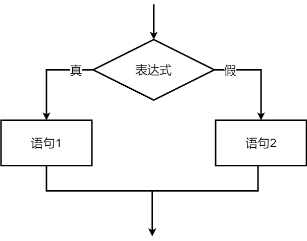

程序设计基础 · 第2次课 · 第2课时
从成绩奖金计算规则到 if-else 单分支结构
按顺序计算成绩平均分：
avg = (a + b) / 2.0;
根据成绩不同，采用不同的计算公式。
程序如何根据条件选路径？
本课核心：先理清判断规则，再写条件分支。
<, >, <=,
>=, ==, !=）
if-else 的语法与执行流程if-else 条件表达式== 写成 =、误加分号）根据成绩发放奖金，规定：
这就是典型的二选一分支：
判断依据是：成绩是否小于 55？
| 数学含义 | C语言表达式 | 说明 |
|---|---|---|
| 小于 55 | x < 55 |
触发基础奖金计算 ($y = x \times 1.5$) |
| 大于等于 55 | x >= 55 |
触发激励奖金计算 ($y = (x+5) \times 1.5$) |
| 小于等于 100 | x <= 100 |
小于或等于关系 |
| 等于 55 | x == 55 |
== 表示相等判断（注意区别于赋值 =） |
| 不等于 0 | x != 0 |
不等于关系比较 |
表达式 x < 55 计算后只有两种结果：
在 C 语言内部：
0 表示1）表示== 误写成 =if (x = 55) /* 错误！这是赋值语句 */把 55 赋值给 x，表达式结果恒为真！
if (x == 55) /* 正确：比较是否相等 */if (0 <= x <= 100) /* 错误！ */C语言不会按数学逻辑连续比较！
正确写法：单条件分支逐步拦截。
if (条件表达式) {
/* 条件为真时执行的语句 */
} else {
/* 条件为假时执行的语句 */
}
条件表达式if 后的代码块else 后的代码块
#include <stdio.h>
int main(void)
{
double x, y;
printf("请输入原始成绩: ");
scanf("%lf", &x);
if (x < 55) {
y = x * 1.5;
} else {
y = (x + 5.0) * 1.5;
}
printf("计算所得奖金: %.1f\n", y);
return 0;
}

x < 55{ }if 和 else 对齐，结构清晰省略花括号容易造成逻辑看错和对齐错觉。
加花括号是防止 Bug 的最简单有效习惯！
程序员最容易把 < 55 错写成 <= 55。
普通测试值（如 20 或 80）无法暴露边界处的符号写错问题！
条件为 x < 55 时，临界数据刚好是 55。
我们需要取：临界点本身、刚好小于临界点、刚好大于临界点。
| 测试输入 $x$ | 匹配条件 | 执行公式 | 预期输出奖金 $y$ |
|---|---|---|---|
54 (小于55) |
x < 55 (真) |
54 * 1.5 |
81.0 |
55 (临界点) |
x < 55 (假) |
(55 + 5) * 1.5 |
90.0 |
56 (大于等于55) |
x < 55 (假) |
(56 + 5) * 1.5 |
91.5 |
思考：如果错误把代码写成 if (x <= 55)，输入 55
时计算出的奖金会变成多少？
if (x < 55); { /* 注意末尾的分号！ */
y = x * 1.5;
}
分号代表“空语句”，导致 if 结束！后方的 `{ }` 会无条件执行！
if 括号后面不要随手打分号！
分号放在具体语句的结尾，而不是条件判断句之后。
< 与
<= 符号准确性的关键。
if (条件) 括号后直接随手写分号！== 与赋值符号 =。| 类型说明 | C语言关键字 | scanf 占位符 | printf 占位符 |
|---|---|---|---|
| 整型 | int |
%d |
%d |
| 单精度浮点型 | float |
%f |
%f |
| 双精度浮点型 | double |
%lf |
%f / %.2f |
scanf
按照占位符指示的格式，从键盘读取数据并写入变量所对应的内存地址。
注意：必须使用 & 取地址符传递变量存储地址！
| 特性 | float (单精度) | double (双精度) |
|---|---|---|
| 占用内存 | 4 字节 (32 位) | 8 字节 (64 位) |
| 有效数字 | 约 6 ~ 7 位数字 | 约 15 ~ 17 位数字 |
| scanf 占位符 | %f |
%lf (不可省略 l) |
在 C 语言程序设计中，涉及小数计算时，推荐优先选用 double 类型。
它能大幅降低浮点数累计误差，且在现代 CPU 上运算效率极高。
int x;
scanf("%d", &x);
if (x < 55) {
y = x * 1.5;
}
缺点：无法输入带有小数的成绩（如 54.5 分）。
double x, y;
scanf("%lf", &x);
if (x < 55) {
y = x * 1.5;
}
优点：精准支持小数输入与高精度奖金计算。
double x;
scanf("%f", &x); /* 错误！scanf 中 double 必须用 %lf */
会导致内存数据截断或未定义解析错误！
double x;
scanf("%lf", x); /* 错误！未加 & 传递地址 */
程序运行时会导致非法内存写入崩溃（Segmentation Fault）！
在源程序顶部加入预处理指令：
#include <math.h>该头文件声明了标准数学运算相关函数的函数原型。
当需要完成超出加减乘除基本运算符的复杂数学计算（如求根号、绝对值、次方等）时使用。
| 函数原型 | 功能说明 | 数学对应 | 示例与结果 |
|---|---|---|---|
double sqrt(double x) |
求平方根 | $\sqrt{x}$ | sqrt(9.0) $\to$ 3.0 |
double fabs(double x) |
求浮点数绝对值 | $|x|$ | fabs(-5.5) $\to$ 5.5 |
double pow(double x, double y) |
求 $x$ 的 $y$ 次方 | $x^y$ | pow(2.0, 3.0) $\to$ 8.0 |
double exp(double x) |
求 $e$ 的 $x$ 次方 | $e^x$ | exp(1.0) $\to$ 2.71828... |
double log(double x) |
求自然对数 | $\ln(x)$ | log(2.7182818) $\to$ 1.0 |
#include <stdio.h>
#include <math.h>
int main(void)
{
double x = 16.0, a = -7.5;
printf("sqrt(16.0) = %.2f\n", sqrt(x)); /* 输出: 4.00 */
printf("fabs(-7.5) = %.2f\n", fabs(a)); /* 输出: 7.50 */
printf("pow(2, 3) = %.2f\n", pow(2.0, 3.0)); /* 输出: 8.00 */
return 0;
}
<, >,
<=, >=, ==,
!= 用于条件判断。
{{ }} 规范。
int (%d)、float
(%f)、double (%lf) 格式占位符与取地址符 &。
sqrt、fabs、pow、exp、log
等常用数学函数。